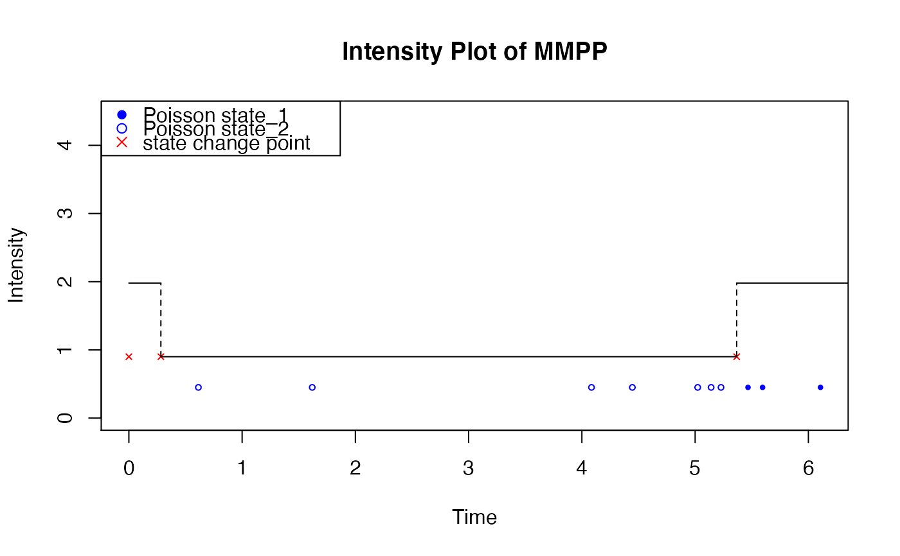

R/drawUniMMPPIntensity.R
drawUniMMPPIntensity.RdTake a mmpp object and draw its intensity accordingly
drawUniMMPPIntensity(
mmpp,
simulation,
add = FALSE,
color = 1,
fit = FALSE,
int_title = "Intensity Plot of MMPP"
)a mmpp object including its transition probability matrix, lambda0, delta, and c.
the simulated Markov-modulated Poisson Process(MMPP)
logical; if TRUE add to an already existing plot; if NA start a new plot taking the defaults for the limits and log-scaling of the x-axis from the previous plot. Taken as FALSE (with a warning if a different value is supplied) if no graphics device is open.
A specification for the default plotting color.
a boolean indicating whether to fit the events provided
title of the plot.
no return value, intensity plot of Markov-modulated Poisson process
Q <- matrix(c(-0.4, 0.4, 0.2, -0.2), ncol = 2, byrow = TRUE)
x <- pp_mmpp(Q, delta = c(1 / 3, 2 / 3), lambda0 = 0.9, c = 1.2)
y <- pp_simulate(x, n = 10)
drawUniMMPPIntensity(x, y)
